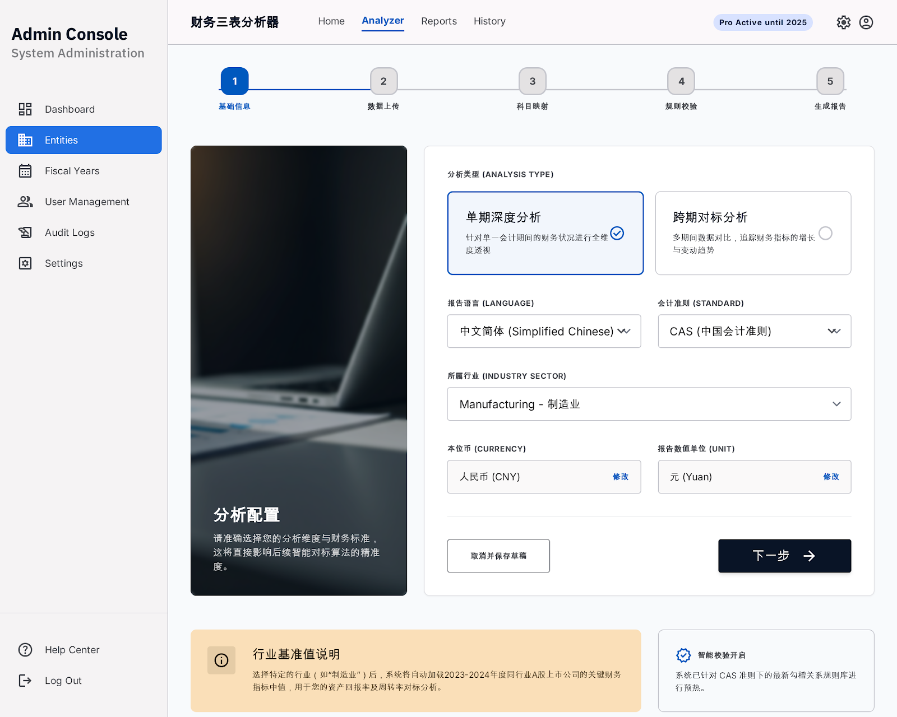

PDF 三表上传
围绕资产负债表、损益表、现金流量表建立分析流程，贴近用户实际能拿到的报表资料。
电子化交付 · 激活码授权 · 在线 PWA
上传资产负债表、损益表、现金流量表 PDF，系统帮助你看懂关键指标、识别财务风险，并生成可下载的 PDF 分析报告。

前台客户端只保留分析流程，后台管理端独立配置，不随客户入口展示。
购买后获得
Core Selling Points
不是给会计做账，而是帮助非财务人员快速理解外部公司的财务质量。
围绕资产负债表、损益表、现金流量表建立分析流程，贴近用户实际能拿到的报表资料。
自动计算盈利能力、现金流质量、偿债能力、运营效率、成长变化等核心指标。
用规则模型给出综合评分、评级和维度得分，让非财务人员也能抓住重点。
突出利润现金含量、经营现金流、资产负债率、应收账款等常见风险点。
保留公式、指标含义和解释文字，适合评估公司时顺便学习财务报表。
生成综合结论、盈利质量、现金流质量、风险清单和关键指标报告，便于保存和沟通。
重点分析方向
这套工具不是简单罗列指标，而是优先回答三个问题：公司赚钱吗？赚到的钱有没有变成现金？财务风险是否值得进一步核查？
适合人群
Electronic Delivery
购买后通过激活码进入系统，授权以激活码为唯一标准。
无需安装传统软件，使用电脑浏览器访问即可开始分析。
不绑定单一设备，但会限制同一激活码的同时在线数量。
客户只使用前台分析入口，后台配置和 AI API Key 由服务端统一管理。
系统会处理用户上传的报表并生成分析结果。生成后的 PDF 报告不做云端长期保存，请用户当次及时下载。原始 PDF、完整三表明细和报告保存范围，以实际服务端隐私说明为准。
Purchase Notes
不能。它用于辅助理解财务报表、初步评估公司和学习指标，不构成审计、投资、法律、税务或授信意见。
当前主流程面向 PDF 财务报表。扫描件 OCR 和 Excel 支持属于后续扩展能力，购买前请以商品说明和实际版本为准。
报告生成后请及时下载。产品设计上不长期保存生成后的 PDF 报告，避免敏感文件留存。
不适合。它不接入行情、市盈率、市净率等市场数据，重点是从财务三表看经营质量和风险。
Ready to Analyze
适合电商平台以“电子服务 / 激活码 / 在线工具”的方式售卖。